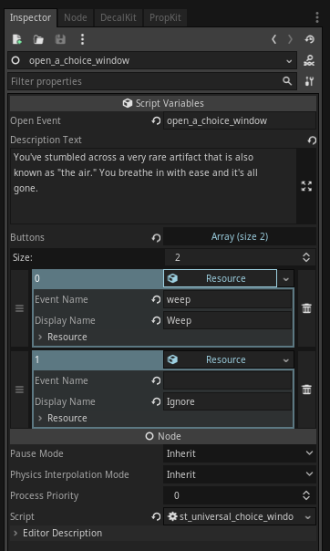

Module: universal_choice_window
Documentation last edited: November 21, 2025 at 23:06 UTC
Description

Очень простой модуль, который добавляет синглтон
UniversalChoiceWindow
, позволяющий открывать такое прикольненькое дешёвое окошко, которое даёт тебе уникальную возможность превратить этот шутер в приключенческую игру. К чёрту здоровое понимание геймдизайна, мы вливаем это дерьмо.
Как использовать?
Ну, ты либо идёшь кодом, либо используешь ST.
Код
# Массив для твоих жалких выборов
var array =
[]
# Первый выбор
var choice0 = UniversalChoiceWindowData.new()
# "Display name" означает нормальный, человеко-читаемый текст на кнопке
choice0.display_name = "Рыдать"
# "Event name" означает событие локации, которое будет вызвано при нажатии на эту кнопку
choice0.event_name = "weep"
# Ещё один выбор для примера
var choice1 = UniversalChoiceWindowData.new()
choice1.display_name = "Игнорировать"
choice1.event_name = ""
# Ты передаёшь этому дерьму 2 аргумента - текст описания и массив выборов.
UniversalChoiceWindow.open("Воздух здесь такой.",
[choice0, choice1]
)
# ТА-ДА, у тебя открыто твоё чёртово окно.
Script Toolkit

В смысле. Ты просто используешь
"st_universal_choice_window"
. Да да да. Ты просто используешь его. Вот и всё. Ты просто передаёшь ему аргументы. О да. И тогда это просто работает. Есть ли что-то, что тебе действительно нужно знать об этом?
General Information
Root directories list
assets, docs, src
Nodes
Classes
None
Resources
Other Scripts
None